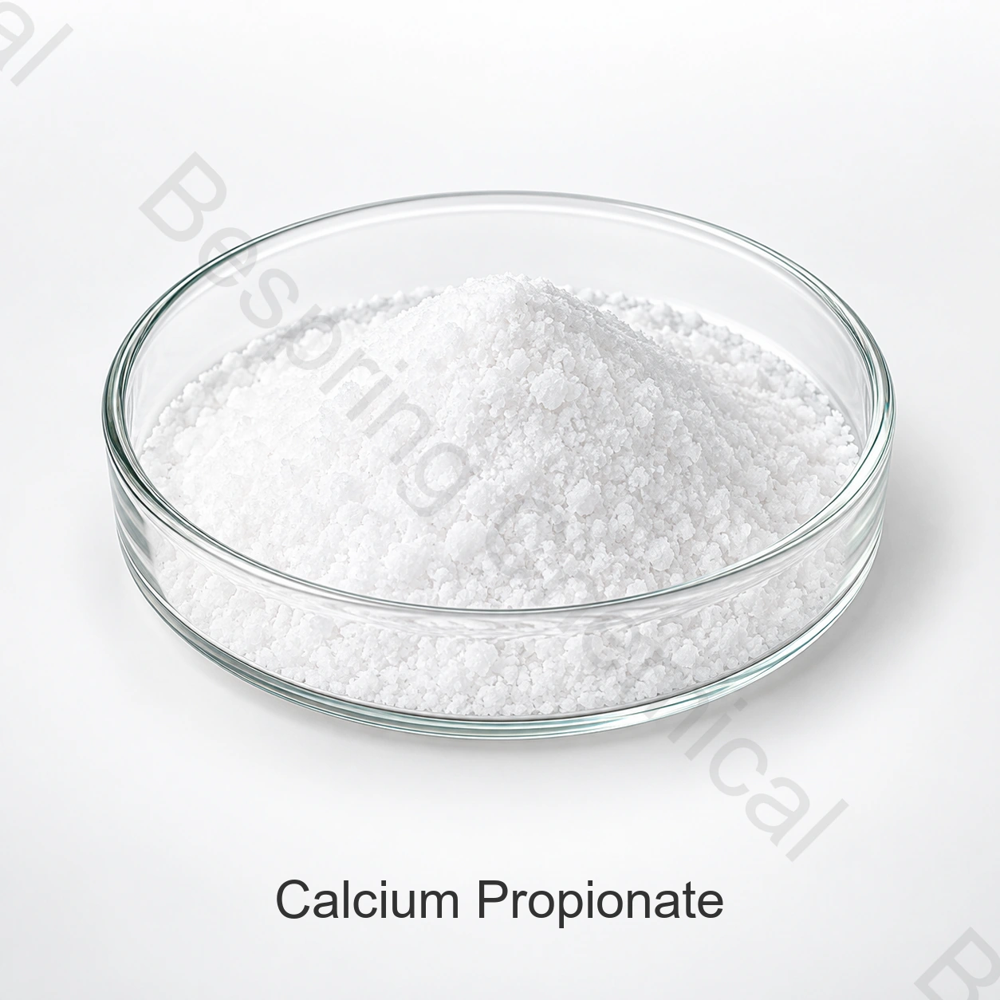

Calciumpropionat E282
Calciumpropionat in Lebensmittelqualität für zulässige Konservierungsanwendungen. Die Tabelle enthält kommerzielle Referenzgrenzwerte und Beispielanalysen.
Konservierungsmittel · Antischimmel · E282
Calciumpropionat ist ein Konservierungsstoff zur Hemmung von Schimmel und Fadenziehen, insbesondere in Brot und Backwaren. Lieferbar gemäß E282/FCC sowie als abgestimmte Mischung.

Bild des Calciumpropionatprodukts Ersetzen Sie es durch ein genehmigtes hochauflösendes Produktfoto, sobald verfügbar.Produktbild · Qualität und Verpackung bei Bestellung bestätigen
Geben Sie uns mit, ob Sie Standard-E282, FCC oder ein Blended-Produkt benötigen, sowie Ihre Menge, Anwendung und Ihr Ziel.
Der Fokus auf BäckereiAntischimmel- und Antiseil-Funktionalität
Mehrere StandardsE282 lebensmittelfähige und FCC-Optionen
MischlösungenAnwendungsspezifische Anforderungen diskutieren
Batch-DokumenteAktuelle Spezifikation und COA auf Anfrage
Produktübersicht
Calciumpropionat, auch Calciumpropanoat genannt, ist das Kalziumsalz der Propionsäure. Im europäischen Lebensmittelzusatzstoff-Nummerierungssystem ist es als E282 und in Codex-Referenzen als INS 282 identifiziert. Lebensmitteltaugliches Material wird typischerweise als weiße Kristalle, Pulver oder Granulate geliefert, mit nicht mehr als einem schwachen Propionsäuregeruch.
In geeigneten Lebensmittelsystemen hilft gelöstes Propionat, Schimmel- und seilbildende Mikroorganismen zu hemmen. Die praktische Leistung hängt vom pH-Wert des Produkts, der Wasseraktivität, den Prozessbedingungen, der Dosierung, der Verteilung in der Formulierung und dem Zielorganismus ab, daher sollten kommerzielle Rezepte durch Studien und regulatorische Überprüfungen bestätigt werden.
Passen Sie das Produkt Ihrem Markt an
"Lebensmittelqualität" ist nicht genug Information für ein genaues Angebot. Geben Sie die erforderlichen Spezifikationen, den Zielmarkt und die Anwendung an, damit der Verkauf das korrekte Produkt und die Dokumentation bestätigen kann.
Calciumpropionat in Lebensmittelqualität für zulässige Konservierungsanwendungen. Die Tabelle enthält kommerzielle Referenzgrenzwerte und Beispielanalysen.
FCC-Standard-Calciumpropionat ist ebenfalls erhältlich. Fordern Sie beim Vertrieb die aktuelle FCC-Spezifikation, die anwendbaren analytischen Methoden und die Dokumentation für Ihr Projekt.
Blended-Produkte können unterschiedliche Anforderungen an Handhabung, Vertrieb und Anwendung unterstützen. Zusammensetzung und Leistungsziele werden von Fall zu Fall bestätigt.
FCC- und gemischte Calciumpropionat-Optionen können andere Spezifikationen als die untenstehende Standardtabelle E282 verwenden. Kontakt zum Vertrieb Teilen Sie uns Ihre Anwendungs- und Freigabekriterien mit.
Erhaltungsanwendungen
Zulässige Kategorien und Nutzungsniveaus variieren je nach Rechtsraum. Der Käufer ist verantwortlich für die Überprüfung der lokalen Vorschriften, der Formulierungseignung und der Anforderungen an das Etikett.
Hilft, Schimmel und Seilverderb in geeigneten Brotsorten, Brötchen, Brötchen und anderen hefegerähten Backprodukten zu kontrollieren.
Verwendet in ausgewählten Tortillas, Fladenbroten, Kuchen und Backmischungen nach Prozess und sensorischer Validierung.
Darf zur Konserverung in zugelassenen Käsekategorien gemäß den geltenden Marktregeln verwendet werden.
Eine Erhaltungsoption für qualifizierte Süßwaren-, Glasur-, Pudding- und Füllsysteme.
Kann die mikrobielle Kontrolle in erlaubten Obstzubereitungen, Marmeladen und Gelees unterstützen.
Standard- oder gemischtes Calciumpropionat kann in trockene Vormischungen zur kontrollierten Verteilung und Dosierung eingebaut werden.
Technische Informationen
Die Tabelle zeigt kommerzielle Referenzgrenzwerte und Beispielanalysen. Die Beispielergebnisse beziehen sich auf eine Probe beziehungsweise Charge. Für jede Lieferung gelten die vereinbarte Spezifikation und das zugehörige Chargen-COA.
Horizontal scrollen oder die Tastatur verwenden, um alle Spalten zu lesen
| Testparameter | Einheit | Spezifikation | Beispielergebnis |
|---|---|---|---|
| Gehalt | % | 99.0–100.5 | 99.51 |
| Wasser | % | ≤ 4.0 | 3.2 |
| pH-Wert von 10 % wässriger Lösung bei 25 °C | — | 7.5–10.5 | 8.0 |
| Schwermetalle (als Pb) | mg/kg | ≤ 10 | < 10 |
| Fluorid (F) | % | ≤ 0.003 | < 0,003 |
| Wasserunlösliche Substanz | % | ≤ 0.2 | 0.12 |
| Magnesium (als MgO) | % | ≤ 0.4 | < 0,4 |
Die Beispielanalyse ersetzt keine Chargenfreigabe. Jede Lieferung wird anhand der vereinbarten Anforderungen und des zugehörigen COA bewertet.
Hinweis zur Spezifikation: Der Summenparameter „Schwermetalle (als Pb)“ ist kein separater Bleinachweis. Vereinbaren Sie Prüfverfahren und bei Bedarf einen eigenständigen Grenzwert für Blei nach dem Zielstandard und Zielmarkt.
Siehe die FAO/WHO JECFA Calciumpropionat-Monographie, U.S. eCFR 21 §184.1221 und NIH PubChem Verbindungsrekord. Die legale Nutzung muss für den Zielmarkt und die fertige Lebensmittel überprüft werden.
Lagerung und Handhabung
Fragen von Einkäufern
Es wird als Konservierungs-, Schimmel- und Anti-Rope-Inhaltsstoff verwendet. Es wird besonders mit Brot und Backwaren in Verbindung gebracht und kann auch in anderen Lebensmittelkategorien verwendet werden, sofern es die Zielmarktvorschriften erlauben.
In einer geeigneten Formulierung helfen Propionationen, Schimmel und seilbildende Mikroorganismen zu hemmen. Die Ergebnisse hängen vom pH-Wert, Feuchtigkeit, Dosierung, Prozess, Verteilung und der mikrobiellen Herausforderung ab, daher bleiben Haltbarkeitsversuche unerlässlich.
E282 oder INS 282 identifiziert Calciumpropionat als Lebensmittelzusatz. FCC bezeichnet eine Food Chemicals Codex-Spezifikation. Geben Sie die erforderliche FCC-Ausgabe, Kundenlimits und Zielmarkt an, damit der Verkauf das korrekte Produkt und die Dokumente bestätigen kann.
Ja. Gemischtes Calciumpropionat ist für unterschiedliche Kunden- und Anwendungsbedürfnisse erhältlich. Vertrieb kontaktieren mit Ihrer Formulierung, Ihrem Prozess, Ihrer Dosierungsmethode, der Zielhaltbarkeit und den Akzeptanzkriterien, damit die passende Zusammensetzung besprochen werden kann.
Ja. Fordern Sie die Dokumente an, die für den genauen Standard oder das zu bewertende Mischprodukt gelten. Eine Versand-COA sollte mit der vereinbarten Kaufspezifikation überprüft werden.
Geben Sie die erforderliche Qualität oder Mischung, Spezifikation, Menge, Verpackung, Zielland oder Hafen, beabsichtigte Lebensmittelanwendung und Ziellieferdatum an.
Lieferanforderung besprechen
Geben Sie die technischen und logistischen Details, die die Produktauswahl und die Gesamtkosten bis zum Zielort bestimmen. Der Vertrieb kann dann mit der entsprechenden Spezifikation, den Dokumenten und dem kommerziellen Angebot antworten.
Nennen Sie Qualität und Zielmarkt, damit wir verfügbare Dokumente für Ihren Auftrag bestätigen können.
Eine externe Referenz ist kein Chargenzertifikat und keine Bespring-Produktspezifikation.